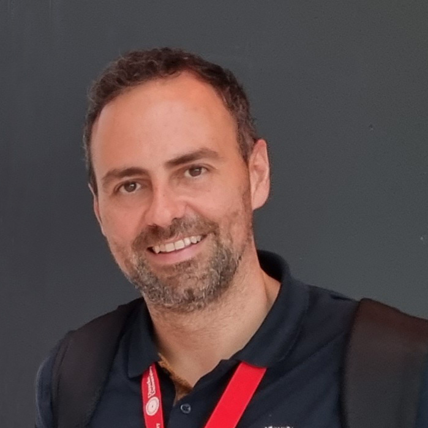

Pedro Valderas
pvalderas@dsic.upv.es
Universitat Politècnica de València, Spain
June 9, 2026
Verona, Italy
4th Workshop on the Modelling and Implementation of Digital Twins for Complex Systems
June 9, 2026, Verona, Italy
(in conjunction with CAiSE 2026)
The concept of Digital Twin is becoming increasingly popular since it was introduced in the scope of the Smart Industry (Industry 4.0). A Digital Twin (DT) is a digital representation of a physical twin that is a real-world entity, system, or event. It mirrors a distinctive object, process, building, or human, regardless of whether that thing is tangible or non-tangible in the real world. The DT technology provides benefits such as real-time remote monitoring and control; greater efficiency and safety; predictive maintenance and scheduling; scenario and risk assessment; better intra- and inter-team synergy and collaborations; more efficient and informed decision support system; personalisation of products and services; and better documentation and communication. The ultimate purpose of Digital Twins is to improve decision-making for solving real-world problems, by using the digital model to create the information necessary for decision-making and subsequently applying the decisions in the real world. Nowadays, Digital Twins are not limited to industrial applications but are spreading to other areas as well, such as, for example, in the healthcare domain, in personalised medicine and clinical trials for drug development.
This workshop aims at getting a better understanding of the techniques that can be used to model and implement Digital Twins and their applications in different domains. In this workshop, we welcome contributions that aim at introducing formal definitions of Digital Twin, but also contributions that describe applications of Digital Twins in different domains. Contributions on tooling for Digital Twins are also welcome.
Potential topics include, but are not limited to:
Tuesday, June 9, 2026